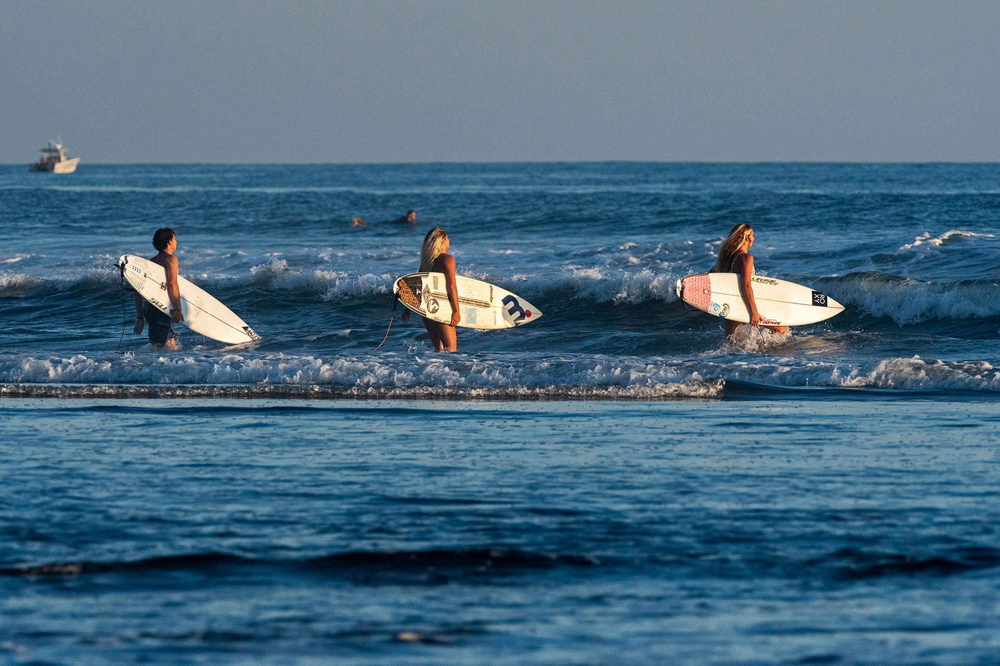
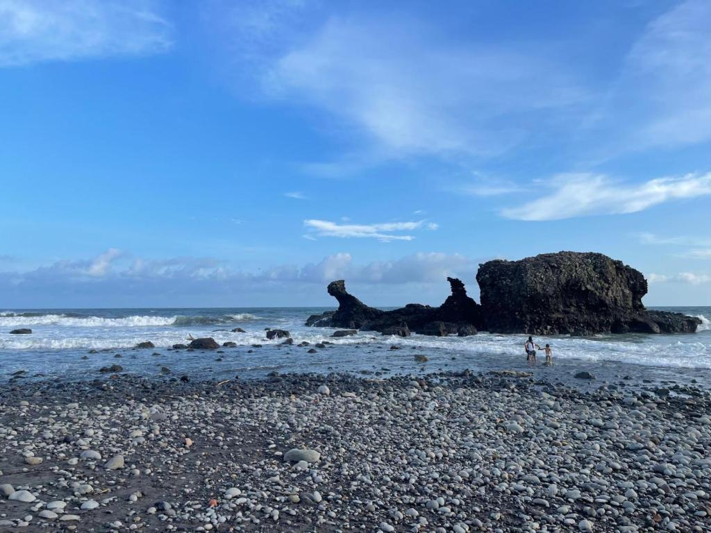

El Tunco
La mejor playa turística de El Salvador
Playa El Tunco es uno de los destinos turísticos más emblemáticos y visitados de El Salvador, reconocido internacionalmente por sus impresionantes olas, su ambiente relajado y su vibrante vida turística.
Con el paso de los años, este destino se ha convertido en uno de los principales lugares para practicar surf en Centroamérica, atrayendo turistas nacionales e internacionales durante todo el año.
Sus hermosos atardeceres, la cercanía con el océano, el ambiente juvenil y la variedad de actividades recreativas hacen de este lugar una experiencia única para quienes desean relajarse y disfrutar de la naturaleza.
Además de sus playas, los visitantes pueden disfrutar de hoteles, restaurantes, cafés, música en vivo y gastronomía típica salvadoreña frente al mar.
El Tunco también es ideal para compartir momentos con amigos, familia y vivir experiencias inolvidables en uno de los destinos turísticos más importantes de El Salvador.
La Libertad, El Salvador. Km 42 Carretera El Litoral.


